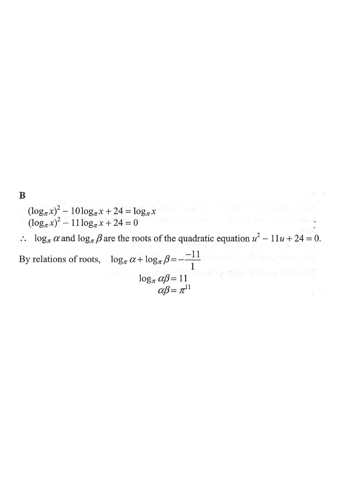

Question 32 · 8. Laws of Indices, Exponential and Logarithmic Functions
If the roots of the equation
\[(\log_{\pi}x)^2-10\log_{\pi}x+24=\log_{\pi}x\]
are $\alpha$ and $\beta$, then
\[\alpha\beta=\]
A. $\pi^{10}$B. $\pi^{11}$C. $\log_{\pi}10$D. $\log_{\pi}11$

Figure (original exam diagram)
Step 1 Collect all $\log_{\pi}x$ terms on one side
\[(\log_{\pi}x)^2-10\log_{\pi}x+24=\log_{\pi}x\]
\[(\log_{\pi}x)^2-10\log_{\pi}x-\log_{\pi}x+24=0\]
Move the right-hand $\log_{\pi}x$ to the left and gather like terms.
Step 2 Simplify to a standard quadratic form
\[(\log_{\pi}x)^2-11\log_{\pi}x+24=0\]
$-10\log_{\pi}x-\log_{\pi}x=-11\log_{\pi}x$, so the middle coefficient is $-11$.
Step 3 Substitute $u=\log_{\pi}x$
\[u^2-11u+24=0\]
Since $\alpha$ and $\beta$ are the roots of the original equation, the corresponding values
$u_1=\log_{\pi}\alpha$ and $u_2=\log_{\pi}\beta$ are the roots of this quadratic.
This turns a log equation into a plain quadratic — the key trick of the question.
Step 4 Apply the relation of roots (sum & product)
For $u^2-11u+24=0$ with roots $u_1,u_2$:
\[u_1+u_2=-\frac{-11}{1}=11,\qquad u_1u_2=\frac{24}{1}=24\]
So
\[\log_{\pi}\alpha+\log_{\pi}\beta=11,\qquad \log_{\pi}\alpha\cdot\log_{\pi}\beta=24\]
You need $\alpha\beta$, so focus on the sum of the log-roots — it can be merged by a log law.
Sum and Product of Roots
\(\alpha+\beta=-\dfrac{b}{a},\qquad \alpha\beta=\dfrac{c}{a}\)
For \(u^{2}-11u+24=0\), \(u_1+u_2=11\) and \(u_1u_2=24\).
Step 5 Merge the sum with the product law of logarithms
\[\log_{\pi}\alpha+\log_{\pi}\beta=\log_{\pi}(\alpha\beta)=11\]
Convert back to exponential form (base $\pi$):
\[\alpha\beta=\pi^{11}\]
$\log_{\pi}(\alpha\beta)=11\;\Longleftrightarrow\;\alpha\beta=\pi^{11}$. Check: $3+8=11$ ✓ and $3\times 8=24$ ✓.
Product Law of Logarithms
\(\log_aM+\log_aN=\log_a(MN)\)
\(\log_{\pi}\alpha+\log_{\pi}\beta=\log_{\pi}(\alpha\beta)=11\), so \(\alpha\beta=\pi^{11}\).
Answer: B. $\;\pi^{11}$
PRACTICE Similar question — try it yourself
Question. If the roots of \(\left(\log_3x\right)^{2}-7\log_3x+12=\log_3x\) are \(\alpha\) and \(\beta\), find \(\alpha\beta\).
Show the worked solution
Step 1. Move the right-hand term across: \(\left(\log_3x\right)^{2}-8\log_3x+12=0\).
Step 2. Let \(u=\log_3x\): \(u^{2}-8u+12=0\Rightarrow(u-2)(u-6)=0\), so \(u=2\) or \(6\).
Step 3. Sum of roots: \(\log_3\alpha+\log_3\beta=2+6=8\).
Step 4. Product law: \(\log_3(\alpha\beta)=8\Rightarrow\alpha\beta=3^{8}=6561\).
Answer: \(6561\)